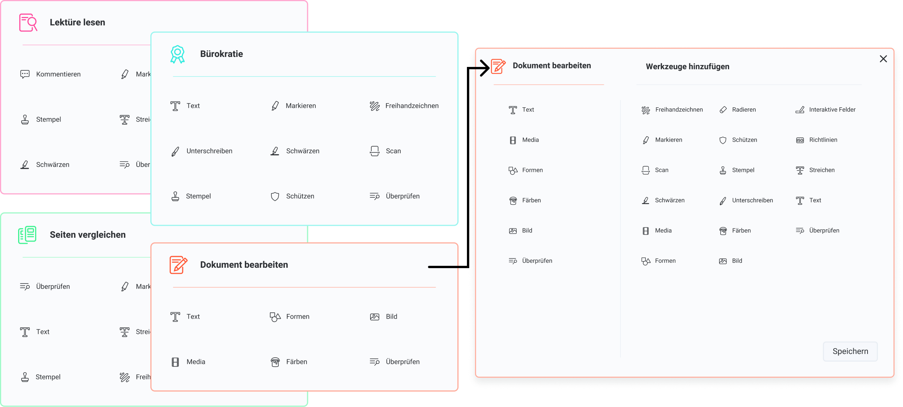
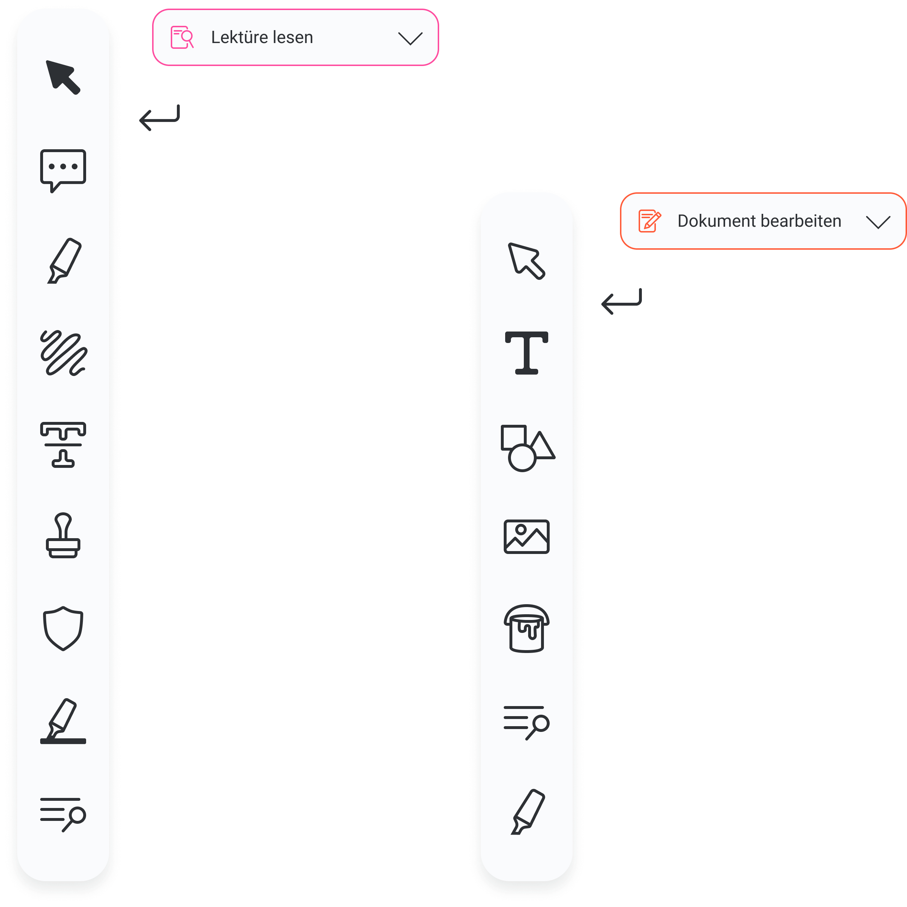

Application Design März 2021-Juli2021 Yvonne Becker, Sophie Vollmer, Lara Weiblen
Redesign einer Desktop-ApplikationDas Konzept von "modity" baut auf dem Fokus des kollaborativen Arbeitens sowie dem Arbeiten
innerhalb eines kontextbasierten Modi auf. Daneben wird verstärkt auf Usability und User Experience
geachtet. Die Applikation wird für Anwendende zugänglicher gemacht. Die Nutzenden sollen sich nicht
ausführlicher mit der Anwendung beschäftigen müssen, da es sich um ein Arbeitstool handelt, dass
unterstützend und zielführend die Bearbeitung von Dokumenten im Blick hat. Hervorzuheben sind die
bewusste Konzentration auf das Ziel der Nutzenden sowie die Beschleunigung des Arbeitsprozesses beim
Erreichen dessen. Die Anwendung basiert auf einem unterstützenden und fördernden Konzept, das
gezielt dort ansetzt, wo Nutzende die Schnittstelle zum PDF-Dokument benötigen. Dabei nimmt die
Anwendung komplizierte Schritte ab, wie die Wahl des richtigen Werkzeugs, und leitet Nutzende durch
ihren Use Case, ohne viel Aufmerksamkeit auf sich zu ziehen. Das neue Konzept arbeitet im
Hintergrund und erleichtert banale Entscheidungen, in dem es diese nicht zur Verfügung stellt,
sondern dauerhaft alle Möglichkeiten unaufdringlich bietet.
Modusbearbeitung Die Arbeitsmodi beschleunigen den Arbeitsprozess, durch schnelles
Erreichen zusammenhängender Tasks. So müssen sich Nutzende nicht lange mit aktuell überflüssigen
Funktionen beschäftigen. Als Vollprofi können auch eigene Arbeitsmodi erstellt und verwaltet werden.

Übersichtliches Dashboard Auf dem übersichtlichen Dashboard ist alles Wichtige auf einen
Blick. So können Aufgaben effizient und gezielt erledigt werden.
Dokument im Fokus Der visuelle Schwerpunkt liegt auf dem Dokument. Modity arbeitet
unterstützend und beschleunigend und setzt das Dokument gekonnt in Szene.
Modus wechseln In der Bearbeitungsansicht kann über wenige Klicks der Arbeitsmodus
geändert werden, sollte ein anderer besser zu der Aufgabe passen.
Intelligente Toolbar Entsprechend des gewählten Modus werden ausgewählte Tools angezeigt.
So können Nutzende konzentriert und rasch ihr Ziel erreichen.

Schnellzugriff Über den Schnellzugriff sind alle notwendigen Feineinstellungen immer dort,
wo sie benötigt werden. So können Nutzende definierter und gezielter arbeiten.
Kollaborativer Bearbeitungsmodus Mit diesem Modus können Nutzende unkompliziert und
effektiv gemeinsam mit ihrem Team arbeiten. Zusammen Lektüren für die Hochschule lesen, Texte
korrigieren oder Dokumente bearbeiten war noch nie so einfach.